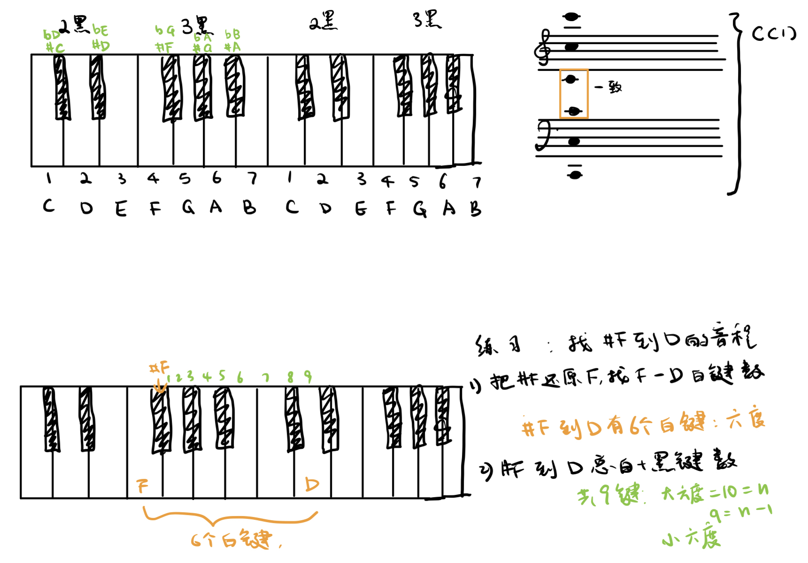
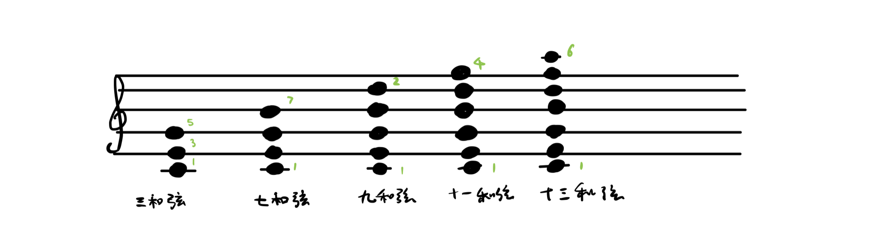
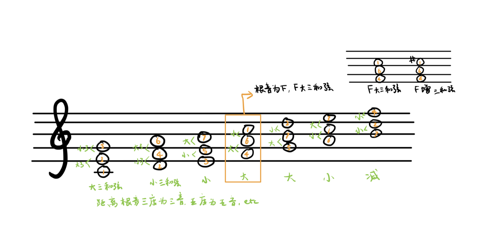
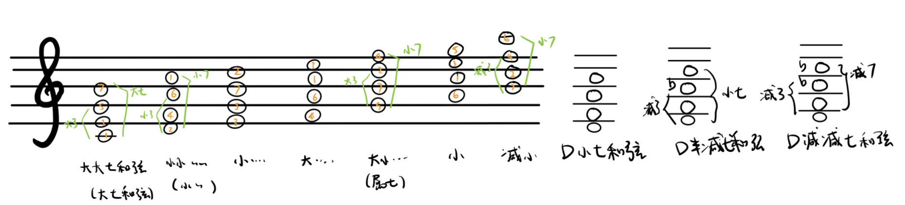
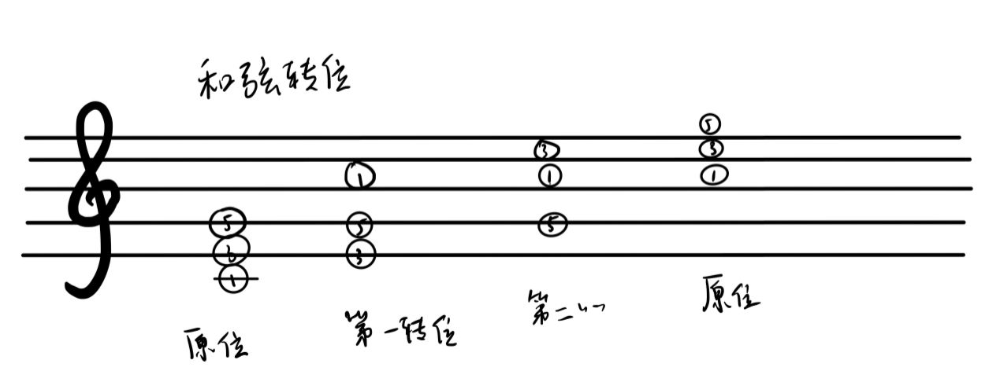

编曲学习笔记
基础乐理
识谱
- CDEFGAB 对应 1234567
- 用钢琴识谱：钢琴键二黑组的前一个黑键是 C
- $\sharp$ 升号 (sharp)
- $\flat$ 降号 (flat)
- $C^{\sharp} = D^{\flat}$, 以此类推
- 高音谱号下一线的 C 和低音谱号加一线的 C 为同一音
音程
音程可以视作： 属性（纯，增，减，倍增，倍减） + 数字 + 单位（度）
- 数字：钢琴上两音跨越的白键距离（包括两个音本身的键）， 升降号先还原
- C-G: 五度，#C-G: 五度
- 属性：纯，大，小， 增，减，倍增，倍减。一四五八可以纯，二三六七可以大 / 小，增，减，倍增，倍减为一到八共有。属性可以通过两个音键包含黑白键的数量确定。
- 虽然 C-G 和 #C-G 都为五度，但 C-G 为纯五度，#C-G 为减五度
八个标准音程：
白键个数决定度数，黑键个数决定属性
| 音程 | 琴键数（白 + 黑） | 度数 |
|---|---|---|
| C 到 C | $1(1+0)$ | 纯一度 |
| C 到 D | $3(2+1)$ | 大二度 |
| C 到 E | $5(3+2)$ | 大三度 |
| C 到 F | $6(4+2)$ | 纯四度 |
| C 到 G | $8(5+3)$ | 纯五度 |
| C 到 A | $10(6+4)$ | 大六度 |
| C 到 B | $12(7+5)$ | 大七度 |
| C 到 C | $13(8+5)$ | 纯八度 |
根据标准音程推算其他音程 ($n$ 表示琴键总数）：
| 倍减 | 减 | 纯 | 增 | 倍增 |
|---|---|---|---|---|
| $n-2$ | $n-1$ | $n$ | $n+1$ | $n+2$ |
| 倍减 | 减 | 小 | 大 | 增 | 倍增 |
|---|---|---|---|---|---|
| $n-3$ | $n-2$ | $n-1$ | $n$ | $n+1$ | $n+2$ |
例如: 6 个琴键的四度为纯四度，则 $n = 6$, 那么
- $n-1=5$: 跨越五个琴键的四度为减四度
- $n-2=4$: 跨越四个琴键的四度为倍减四度

和弦
两个音构成音程，三个及以上不同音构成和弦。和弦分为五类：三和弦，七和弦，九和弦，十一和弦，十三和弦
和弦以任意音为根音，往上叠加三度构建， 例如 CEGBDFAC (13572461). 因为 C 到 C 为七个音，所以和弦最多可以包含 7 个音
| 三和弦 | 七和弦 | 九和弦 | 十一和弦 | 十三和弦 |
|---|---|---|---|---|
| 3 个音 | 四个音 | 五个音 | 六个音 | 七个音 |
| 每个音间为 3 度 | 根音冠音为 7 度 | 根音冠音为 9 度 | 根音冠音为 11 度 | 根音冠音为 13 度 |

每种和弦可以继续往下分，比如七和弦可分为大七和弦，小七和弦，属七和弦，减七和弦
三和弦
三和弦可分为：
- 大三和弦（大 3 度 + 小 3 度）
- 小三和弦（小 3 度 + 大 3 度）
- 增三和弦（大 3 度 + 大 3 度）
- 减三和弦（小 3 度 + 小 3 度）

七和弦
- 大大七和弦 (大 3 + 大 7)
- 小小七和弦（小 3 + 小 7）
- 大小七和弦（大 3 + 小 7）
- 减小七和弦（减 3 + 小 7）
- 减减七和弦（减 3 + 减 7）

和弦转位
从根音依次上升七度为第一，二，…, 转位
- 三和弦有三个音：共两个转位
- 七和弦有四个音：共三个转位

和弦标记
大和弦（Major）
- Cmaj： 大三和弦，135，CM, C$\Delta$, C
- Camj7：大七和弦，1357, CM7, C$\Delta$7, 不可标记为 C7
属七和弦（Dominant 7th： 大小小三度组成
- C7: 135b7
- G7: 5724 （大三，小三，小三）
小和弦（Minor）
- Amin： 613， Am， A-
- Amin7：6135， Am7， A-7
半减七和弦（Half Diminished 7th）
- Bm7b5: 7246， 在小七和弦的基础上降低五音（4）， Bm7-5
减和弦（Diminished）
- Bdim：724， Bo
- Bdim7：724b6， Bo7
增三和弦（Augmented）
- Caug: 13#5
SUS 和弦（挂和弦）
- C 大三和弦 (135) 变为挂二和弦是（125， Csus2），变为挂四和弦为（145，Csus4，Csus）